1.第 一 例
（A）简单再生产的公式
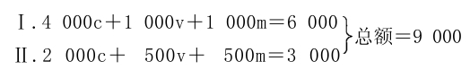
（B）规模扩大的再生产的开端公式
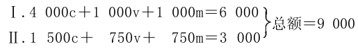
假定在公式（B）中，第Ⅰ部类的剩余价值的一半即500被积累。因此，首先，（1000v＋500m）Ⅰ或1500Ⅰ（v＋m）要由1500Ⅱc补偿；这样，第Ⅰ部类留下的是4000c＋500m，后者要用于积累。（1000v＋500m）Ⅰ由1500Ⅱc来补偿，是简单再生产的一个过程，这在考察简单再生产时已经阐明了。
我们假定，500Ⅰm中有400要转化为不变资本，100要转化为可变资本。要在第Ⅰ部类内部资本化的400m的交换已经阐明了；它们能够直接并入Ⅰc；这样，第Ⅰ部类是：
4400c＋1000v＋100m（最后一项要转化为100v）。
第Ⅱ部类方面为了积累的目的，要向第Ⅰ部类购买100Ⅰm（以生产资料的形式存在），于是这100Ⅰm形成第Ⅱ部类的追加不变资本；而第Ⅱ部类为这个目的而支付的100货币，就转化为第Ⅰ部类的追加可变资本的货币形式。这样，第Ⅰ部类的资本是4400c＋1100v（后者以货币形式存在）＝5500。
第Ⅱ部类的不变资本现在是1600c；第Ⅱ部类要运用这个资本，就必须再投入50v的货币来购买新的劳动力，从而使他的可变资本由750增加到800。第Ⅱ部类这样增加的不变资本和可变资本，共计150，要由该部类的剩余价值来偿付；因此，在750Ⅱm中，只剩下600m作为第Ⅱ部类资本家的消费基金，他们的年产品现在划分如下：
Ⅱ.1600c＋800v＋600m（消费基金）＝3000。
在消费资料上生产的150m，在这里已经转化为（100c＋50v）Ⅱ。它将以它的实物形式，全部进入工人的消费：如上所述，100为第Ⅰ部类的工人（100Ⅰv）所消费，50为第Ⅱ部类的工人（50Ⅱv）所消费。事实上，因为第Ⅱ部类的总产品要以积累所必需的形式制造出来，所以增大了100的剩余价值部分要以必要消费资料的形式再生产出来。如果再生产实际是按扩大的规模开始的，第Ⅰ部类的可变货币资本100，就会通过他们的工人阶级的手，流回到第Ⅱ部类；第Ⅱ部类则把商品储备中的100m转给第Ⅰ部类，同时又把商品储备中的50转给本部类的工人阶级。
为积累的目的而改变的组合，现在表述如下：
Ⅰ.4400c＋1100v＋500消费基金＝6000
Ⅱ.1600c＋800v＋600消费基金＝3000
总计同上＝9000。
其中，资本是：
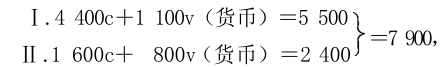
在开始生产时则是：
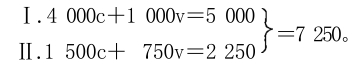
如果实际积累现在是在这个基础上进行的，这就是说，如果用这个已经增加的资本实际进行生产，在第二年结束时，我们就得出：
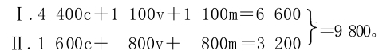
假定第Ⅰ部类继续按同一比例进行积累，550m作为收入花掉，550m积累起来。这样，首先1100Ⅰv要由1100Ⅱc补偿，其次，550Ⅰm也要实现为同等数额的第Ⅱ部类的商品，合计是1650Ⅰ（v＋m）。但是，第Ⅱ部类需要补偿的不变资本只＝1600；因此，其余的50，必须从800Ⅱm中补充。如果我们在这里首先撇开货币不说，那么，这个交易的结果如下：
Ⅰ.4400c＋550m（要资本化的剩余价值）；此外还有资本家和工人的消费基金1650（v＋m），在商品Ⅱc上实现。
Ⅱ.1650c（如上所述，其中的50是从Ⅱm中取出来追加的）＋800v＋750m（资本家的消费基金）。
但是，如果第Ⅱ部类的v和c保持原有的比例，那么，投入50c，就还要投入25v；这又必须从750m中取出。因此，我们得出：
Ⅱ.1650c＋825v＋725m。
第Ⅰ部类的550m要资本化；如果保持以前的比例，其中440就形成不变资本，110就形成可变资本。这110势必要从725Ⅱm中取出，就是说，价值110的消费资料将由第Ⅰ部类的工人消费，而不是由第Ⅱ部类的资本家消费，因此，后者也只好把他们不能消费的110m转化为资本。因此，725Ⅱm就只剩下615Ⅱm。但是，第Ⅱ部类把110这样转化为追加不变资本时，他们还需要有追加的可变资本55；这就必须再从他们的剩余价值中取出；从615Ⅱm中减去这个数额，就只剩下560，供第Ⅱ部类的资本家消费。所以，在完成一切现实的和可能的转移以后，现在的资本价值是：
Ⅰ.（4400c＋440c）＋（1100v＋110v）＝4840c＋1210v＝6050
Ⅱ.（1600c＋50c＋110c）＋（800v＋25v＋55v）
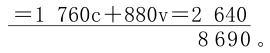
如果要使事情正常地进行，第Ⅱ部类就必须比第Ⅰ部类积累得快，因为如果不是这样，Ⅰ（v＋m）中要与商品Ⅱc交换的部分，就会比它惟一能与之交换的Ⅱc增加得快。
如果再生产是在这个基础上并且在其他条件不变的情况下继续进行，下一年结束时，我们就得出：
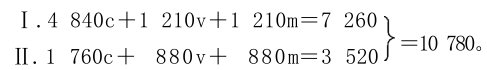
如果剩余价值划分率不变，第Ⅰ部类首先就会把1210v和剩余价值的一半＝605，合计＝1815，作为收入花掉。这个消费基金，又比Ⅱc大55。这55要从880m中取出，这样就剩下825。55Ⅱm转化为Ⅱc时，又要从Ⅱm中扣除相应的可变资本＝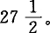留下消费的是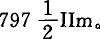
第Ⅰ部类中现在要资本化的是605m，其中484转化为不变资本，121转化为可变资本，后者要从Ⅱm中扣除，Ⅱm现在是＝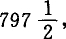扣除后剩下的是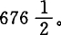因此，第Ⅱ部类会把121再转化为不变资本；为此，还需要有可变资本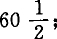这同样要从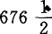中扣除，剩下用于消费的只是616。
这时的资本是：
Ⅰ.不变资本4840＋484＝5324。
可变资本1210＋121＝1331。
Ⅱ.不变资本1760＋55＋121＝1936。
可变资本
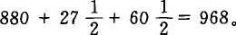
合计
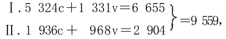
年终时的产品是：
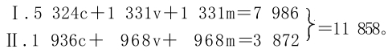
我们重复这种计算，把分数去掉，就得出下一年结束时的产品：
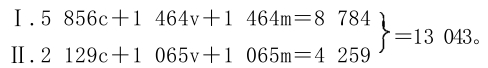
再下一年结束时的产品是：
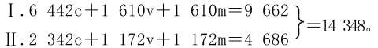
在五年规模扩大的再生产期间，第Ⅰ部类和第Ⅱ部类的总资本，已经由5500c＋1750v＝7250，增加到8784c＋2782v＝11566，也就是按100∶160之比增加了。总剩余价值原来是1750，现在是2782。已经消费的剩余价值，原来在第Ⅰ部类是500，在第Ⅱ部类是600，合计＝1100；但是在最后一年，在第Ⅰ部类是732，在第Ⅱ部类是745，合计＝1477，因此，是按100∶134之比增加了。